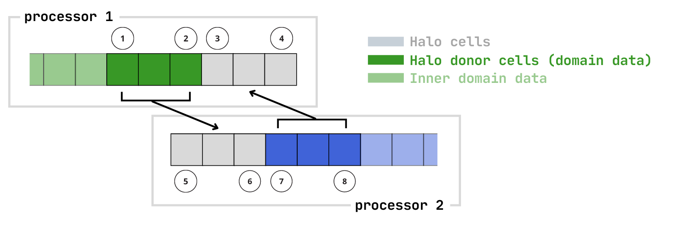

MPIHaloArray
This is an example
Halo Exchange

Missing docstring for MPIHaloArrays.MPIHaloArray. Check Documenter's build log for details.
MPIHaloArrays.fillhalo! — Functionfillhalo!(A::MPIHaloArray, fillvalue)Fill the halo regions with a particular fillvalue.
Arguments
A::MPIHaloArrayfillvalue: value to fill the halo regions of A with
MPIHaloArrays.filldomain! — FunctionFill the domain data with a single filval.